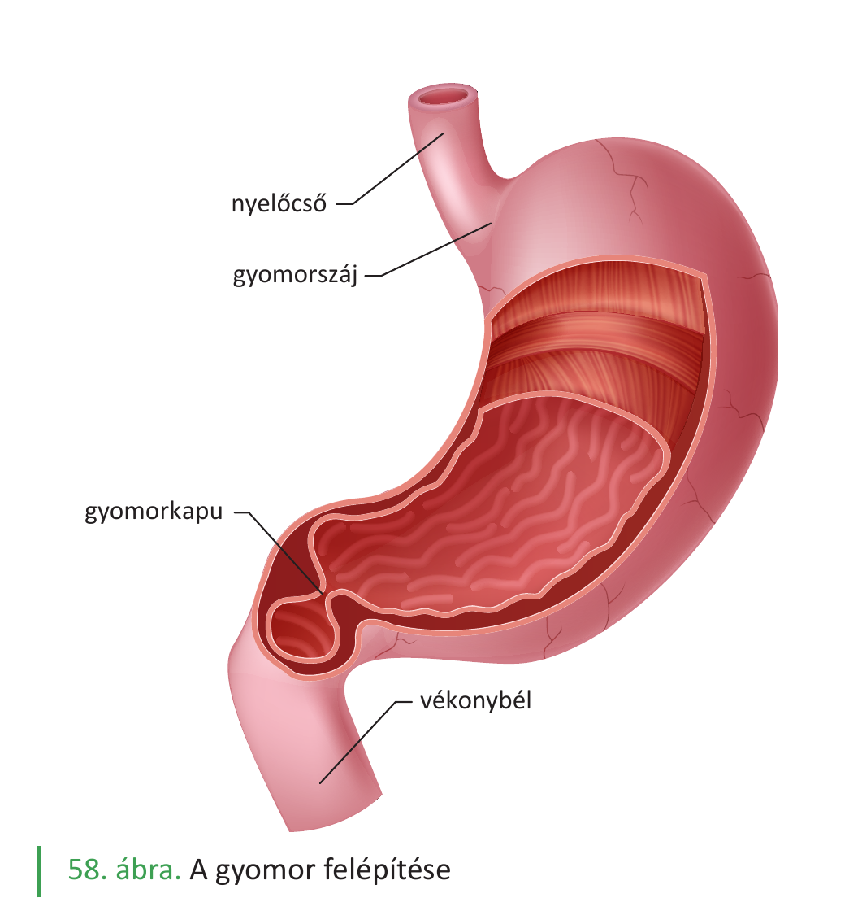
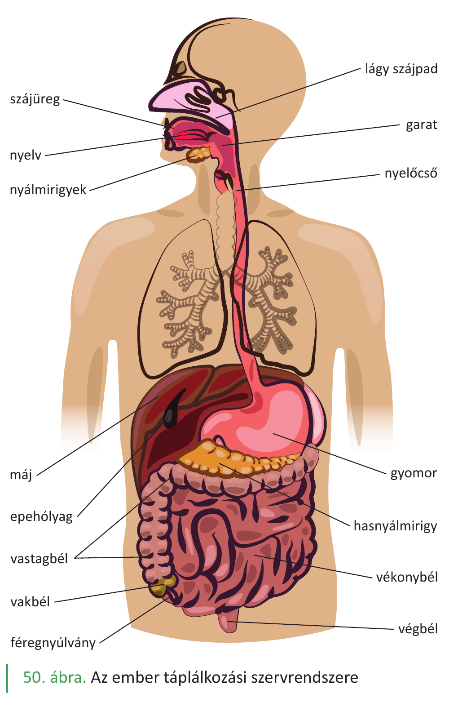

32. A fehérjék emésztése¶
A fehérjék az élet építőkövei, és a táplálkozással felvett legfontosabb tápanyagok egyike. Fajlagos energiatartalmuk 17 kJ/g. A fehérje-emésztés célja, hogy a táplálékkal felvett, idegen szerkezetű fehérjéket aminosavakra bontsa, amelyekből a szervezet a saját fehérjéit építheti fel. A fehérje-emésztés a gyomorban kezdődik (a többi tápanyagtól eltérően) és a vékonybélben fejeződik be.
A fehérjék lebontásának kémiája¶
A fehérjék hosszú polipeptidláncok, amelyekben az aminosavakat peptidkötések kapcsolják össze. Az emésztés során ezeket a peptidkötéseket hidrolizálják az emésztőenzimek, így a fehérjék fokozatosan:
fehérje → oligopeptidek → kis peptidek → aminosavak
A szájüregben¶
A szájüregben nincs fehérjebontó enzim. A rágás csak mechanikailag aprítja a táplálékot, a falat továbbításra kerül a gyomorba.
A gyomorban — itt kezdődik az emésztés¶
A gyomornedv a gyomor nyálkahártyájának csöves mirigyeiben termelődik. Három fő sejttípus vesz részt:
- Fedősejtek: H⁺- és Cl⁻-ionokat termelnek (sósav). A magas H⁺-koncentráció miatt a gyomornedv pH-ja 0,9 és 1,5 között van.
- Fősejtek: pepszinogént termelnek. Ez a pepszin inaktív előalakja.
- Melléksejtek: mucinózus nyálkát termelnek, amely védi a gyomorfalat a saját savától és enzimétől.
A pepszinogén aktiválása:
- részben az alacsony pH hatására (a sósav „letörli" a gátló részt),
- részben autokatalízissel (a már aktivált pepszin maga is aktiválja a többi pepszinogén molekulát).
A keletkezett pepszin a savas pH-n optimális hatású fehérjeemésztő enzim. A pepszin a fehérjéket adott aminosavaknál hasítja, így a fehérjéket oligopeptidekre bontja.
A sósav további szerepei:
- denaturálja a fehérjéket (gombolyagot kioldja, így az enzimek könnyebben hozzáférnek),
- elöli a táplálékkal bekerült baktériumok nagy részét,
- aktiválja a pepszinogént.
Érdekes: a fehérjék emésztése gyomor hiányában is jól végbemegy a hasnyálmirigy és a bélnedv enzimjei hatására. A gyomor tehát fontos, de nem nélkülözhetetlen szerve a fehérje-emésztésnek.
A vékonybélben — itt fejeződik be az emésztés¶
A vékonybél (patkóbél, éhbél, csípőbél) a fehérje-emésztés befejezésének és az aminosavak felszívásának helye. Két forrásból érkeznek emésztőenzimek:
1. A hasnyálmirigy enzimjei (hasnyál)¶
A hasnyál pH-ja kb. 8 körül van (lúgos), ami semlegesíti a gyomorból érkező savas péppet. A hasnyál tartalmaz több fehérjebontó enzimet:
- Tripszin: inaktív tripszinogén formájában választódik el. A patkóbél nyálkahártyájában termelődő enteropeptidáz enzim aktiválja. A tripszin a polipeptideket adott helyen oligopeptidekre bontja (peptidkötéseket hidrolizál, endopeptidáz).
- Kimotripszin: a tripszinhez hasonlóan endopeptidáz, más helyeken hasít.
A tripszin inaktív tárolása fontos biztonsági mechanizmus: ha aktívan termelődne a hasnyálmirigyben, megemésztené magát a hasnyálmirigy szövetét.
2. A bélhámsejtek felszínén lévő enzimek¶
A bélnedv enzimei nem oldottak — a bélhámsejtek sejtmembránjához kötötten helyezkednek el. Ezek befejezik a fehérjék aminosavakra bontását:
- Peptidázok: a peptideket aminosavakká bontják.
A végeredmény: szabad aminosavak.
A felszívás¶
Az aminosavak felszívódása a vékonybélben történik, főleg a bélhámsejtek mikrobolyhain keresztül:
- Aminosavak: együtt szállítás nátriumionokkal (másodlagosan aktív transzport) — hasonlóan a glükózhoz.
A felszívódott aminosavak a kapillárisvérbe lépnek a bolyhokban, majd a májkapuvénán át a májba kerülnek.
A májsejt szerepe a fehérje-anyagcserében¶
A máj központi szerv a fehérje-anyagcserében:
- Aminosav-átalakítás: a máj-anyagcsere enzimjei képesek egyik aminosavat másik aminosavvá átalakítani (pl. fenilalanint tirozinná). Ez a folyamat a transzamináció.
- Karbamidképzés: az aminosavak –NH₂-csoportjából karbamidot (NH₂–CO–NH₂) képez, ami majd a vizelettel ürül ki. Ez azért fontos, mert az aminosavak energia-célú lebontásakor felszabaduló ammónia mérgező — a karbamid sokkal kevésbé toxikus.
- Vérfehérje-szintézis: aminosavakból vérfehérjéket szintetizál:
- albumin (a vér ozmotikus nyomásának fő szabályozója),
- véralvadási fehérjék (ezekhez K-vitamin szükséges).
A felszívott aminosavak sorsa a sejtekben¶
A vér az aminosavakat a szövetekig szállítja. A sejtekbe jutva többféle sorsra juthatnak:
- Fehérjeszintézis: az aminosavakat a sejtek saját fehérjéinek felépítésére használják (riboszómákon).
- Energia-termelés: ha más tápanyag nem áll rendelkezésre, az aminosavak is lebonthatók (NH₂-csoport leválasztása után), és a szénvázból ATP keletkezik a biológiai oxidációban.
- Átalakítás: glükózzá vagy zsírrá átalakulhatnak (a máj különösen aktív ebben).
Összefoglalás — a fehérjeemésztés szakaszai¶
| Hely | Enzim(ek) | Forrás | Termék |
|---|---|---|---|
| Szájüreg | – | – | – (csak mechanikai aprítás) |
| Gyomor | pepszin (inaktív pepszinogénből) | gyomor fősejtjei | oligopeptidek |
| Vékonybél | tripszin (tripszinogénből, enteropeptidáz aktiválja), kimotripszin | hasnyál | rövidebb peptidek |
| Vékonybél (bélhám) | peptidázok | bélhámsejtek membránja | aminosavak |
A felszívott aminosavak útja: bélhámsejt → kapillárisvér → májkapuvéna → máj → szövetek.
Inaktív elválasztás — biztonsági mechanizmus¶
A fehérjebontó enzimek többsége inaktív elővegyületként (zimogénként) választódik el, és csak az aktív helyén aktiválódik:
- pepszinogén → pepszin (sósav + autokatalízis)
- tripszinogén → tripszin (enteropeptidáz)
- kimotripszinogén → kimotripszin (tripszin)
Ez azért fontos, mert a fehérjebontó enzimek maguk is fehérjék, és ha a termelő szervben aktívak lennének, az emésztené saját szövetét. Az inaktív tárolás és a célhelyen való aktiválás biztosítja, hogy a saját szervezet ne emésztődjön meg.
Ábrák¶

A gyomor felépítése: a nyelőcső felől érkező falat a gyomorszájon át jut a gyomorba, ahonnan a gyomorkapun keresztül halad tovább a vékonybélbe. A gyomor nyálkahártyájának redői és csöves mirigyei termelik a gyomornedvet (sósav + pepszinogén + nyálka).

Az emberi tápcsatorna áttekintése: a fehérje-emésztés a gyomorban kezdődik (pepszin), a vékonybélben fejeződik be (hasnyál tripszinje, bélhám peptidázai). A hasnyálmirigy és a máj a fehérje-anyagcsere kulcsszervei.
Az anyag a 2. tankönyv 45, 48, 50. oldalain található.